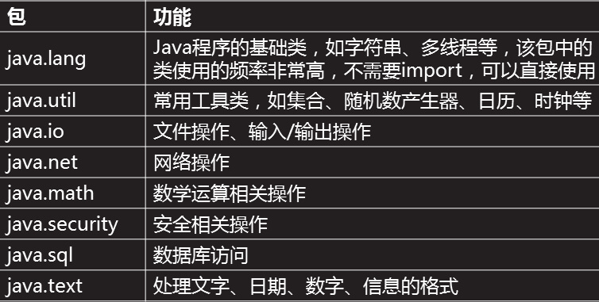
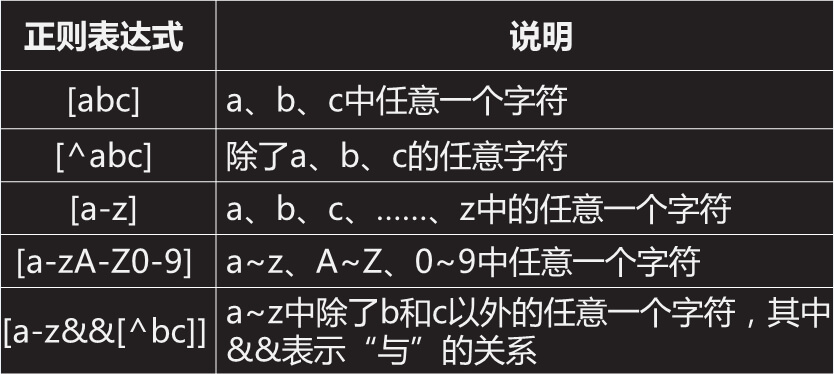
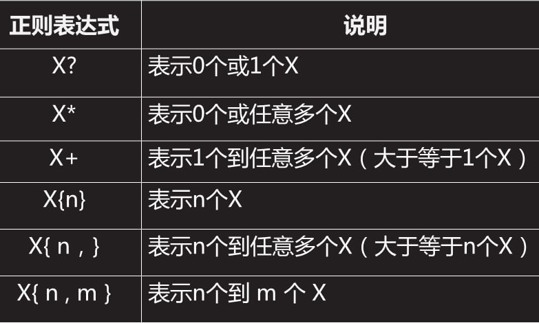
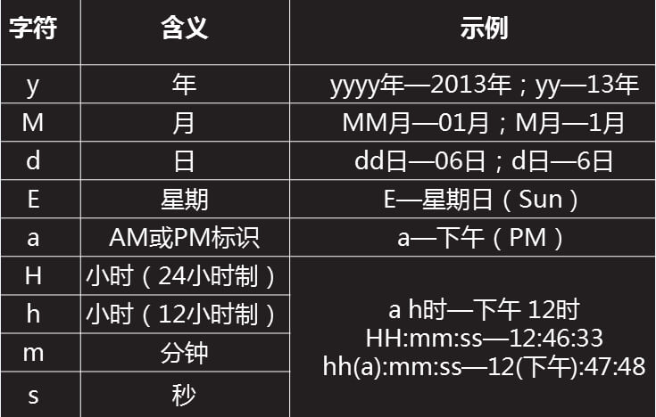
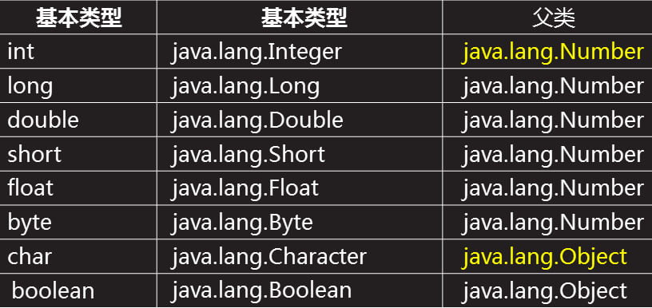
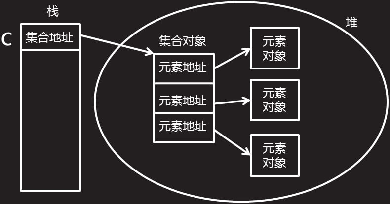
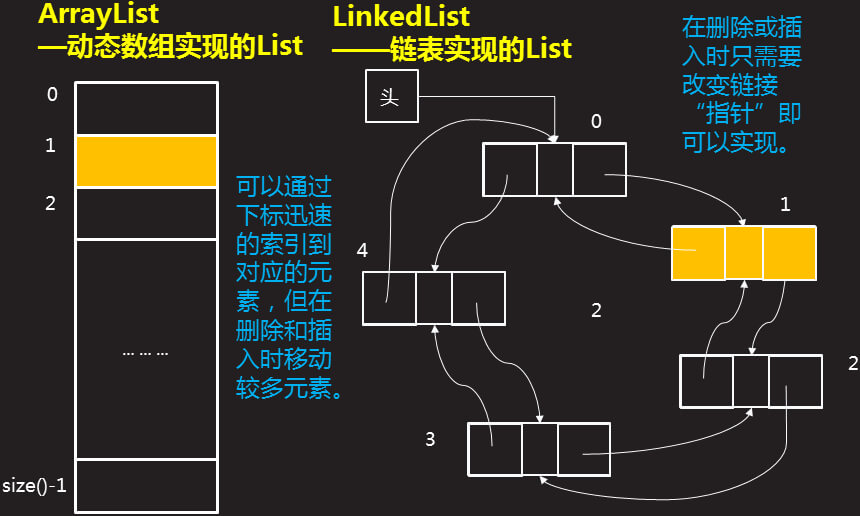
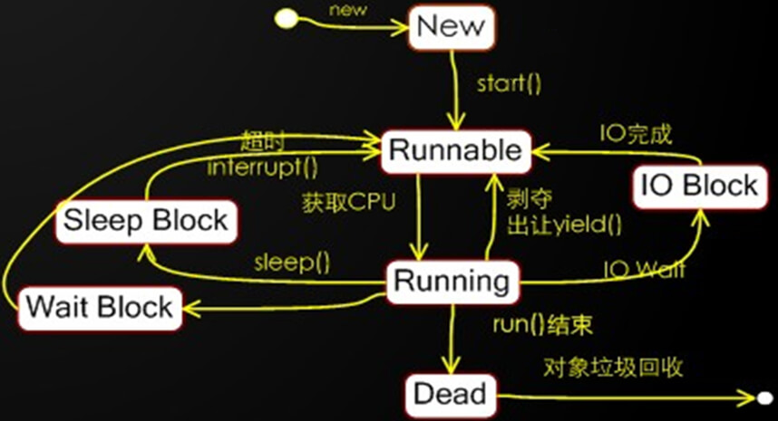
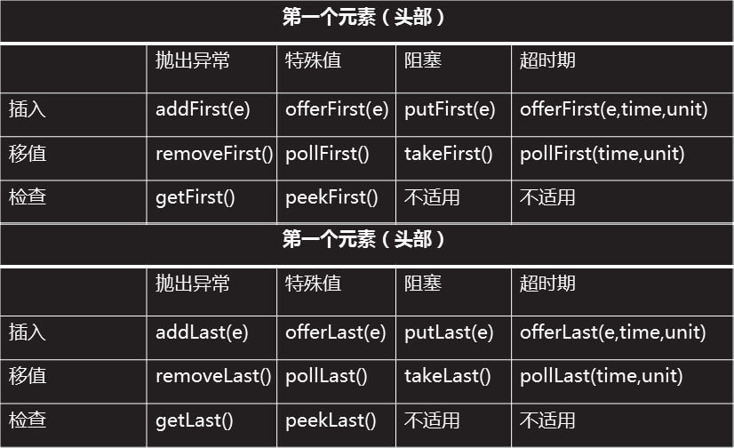

Javase
- JDK API
- API: 一些已写好、可供直接调用的功能（在Java中，这些功能以类的形式封装）
JDK类包结构:

- String
- int length()
- int indexOf(String str[, int fromIndex]):找不到返回-1
- int lastIndexOf(String str[, int fromIndex])
- String substring(int beginIndex[, int endIndex])
- String trim()
- String toUpperCase/toLowerCase()
- String replaceAll(String regex, String replacement)
- static String valueOf(其它类型)
- String[] split(String regex[, int limit])
- char charAt(int index)
- boolean startsWith/endsWith(String prefix[, int toffset])
- boolean matches(String regex)
- byte[] getBytes([String charsetName])
- StringBuffer
- StringBuffer append(...)
- StringBuffer insert(int offset, ...)
- StringBuffer delete(int start, int end)
- StringBuffer replace(int start, int end, String str)
- StringBUffer reverse()
- 正则
字符集合

预定义字符集

数量词

- 分组： (\+86|0086)?\s?\d{11}
- 边界匹配： ^-代表字符串开始 $-代表字符串结束
- Date
- void setTime(long time):1970 年 1 月 1 日 00:00:00GMT以后time毫秒的时间点
- long getTime():自 1970 年 1 月 1 日 00:00:00GMT以来此Date对象表示的毫秒数
- SimpleDateFormat
日期模式匹配字符串

- M(年份中的月):July、Jul、07——m(分钟)
- H(0-23小时)——h(1-12小时)
- k(1-24小时)——K(0-11小时)
- D(年份中的天)——d(月份中的天)
- a(下午???)
- String format(Date date)???
- Date parse(String str)
- Calendar
- static Calendar getInstance([TimeZone zone, Locale aLocale])
- void set(int field, int value)
- void set(int year, int month, int date[, int hourOfDay, int minute, int second])
- int get(int filed):给定日历字段的值
- int getActualMax/Minimum(int field)
- void add(int field, int amount)
- void setTime(Date date)
- Date getTime()
- File
- 构造方法:抽象路径尽量使用相对路径
- File(String pathname):
File("." + File.separator + "path" + File.separator + "path.txt")
- File(String parent, String child):
File("." + File.separator + "path","path2.txt")
- File(File parent, String child) :
File(fileParent,"path3.txt");
- 常用方法：
- boolean isFile()
- long length():返回由此抽象路径名（当前对象）表示的文件的长度（所占字节量）
- String getName()
- if (!file.exists()) { // boolean exists()
file.createNewFile(); // boolean createNewFile()
}
- if (!dir.exists()) {
dir.mkdirs(); // boolean mkdirs()
dir2.mkdirs(); // boolean mkdirs():连同将不存在的父目录创建出来
}
- public static void delete(File file) {
if (file.isDirectory()) { // booleanisDirectory()
File[] subs = file.listFiles(); // File[] listFiles()
for(File sub : subs) {
delete(sub);
}
}
file.delete(); // boolean delete()
}
- FileFilter接口
- File[] subs = dir.listFiles(new FileFilter() { // File[] listFiles(FileFilter filter)
public boolean accept(File file) {
return file.getName().endsWith(".txt");
}
- });
- RandomAccessFile
- RandomAccessFile(File file/String name, String mode)
- void write(int b):向文件中写入1个字节，写的是给定int值对应的二进制的“低八位”
- int read():读取1个字节(低八位)，s若返回值为-1，则表示读取到了文件末尾
- byte[] data = new byte[1024 * 10];
- int len = -1;
- while((len = src.read(data)) != -1) { // int read(byte[] b[, int off, int len])
desc.write(data, 0, len); // void write(byte[] b[, int off, int len])
}
- void close()
- long getFilePointer():获取当前RandomAcessFile指针位置
- void seek(long pos):移动当前RandomAcessFile指针位置
- int skipBytes(int n):不抛出EOFException，返回跳过的字节数，负数则不跳过任何字节
- InputStream & OutputStream 所有字节流的父类
- int read()
- int read(byte[] b[, int off, int len])
- void write(int b)
- void write(byte[] b[, int off, int len])
- void close()
- FOS & FIS（文件流）
- 若指定文件已包含内容，那么当使用FOS写入数据，会将该文件中原有数据全部清除
- FileOutputStream(File file/String name[, boolean append]):为true则文件末尾增加
- BOS & BIS（缓冲流）
- OOS & OIS（对象流）
- 对象序列化：ObjectOutputStream
- void writeObject(Object obj)
- 需要序列化的对象所属的类必须实现Serializable接口，需提供一个常量serialVersionUID
- transient关键字：序列化时其值将被忽略
- 对象反序列化：ObjectInputStream
- Reader & Writer 所有字符流的父类
- 以char为单位读写数据，一次处理一个unicode，底层仍然是基本的字节流
- int read():返回的int值“低16”为有效
- int read(char[] cbuf[, int off, int len])
- void write(int c):写出给定int值“低16”位表示的字符
- void write(String str[, int off, int len])
- void write(String str):写入字符串
- void close()
- OSW & ISR（转换流）
- OutputStreamWriter(OutputStream out[, String charsetName])
- InputStreamReader(InputStream in[, String charsetName])
- PW & BR
- PrintWriter:具有自动行刷新的缓冲字符输出流
- PrintWriter(File file/String fileName)
- PrintWriter(OutputStream out[, boolean autoFlush])：true表示具有自动行刷新
- PrintWriter(Writer writer[, boolean autoFlush)
- void print/println(基本类型/对象)：
- 若该流具有自动行刷新且通过println写出，则都会实际写出内容，而不是进行缓存
- BufferedReader
- String readLine():连续读取一行字符串，返回的字符串中不包含换行符
- TCP通信 ???
-
- Object
- String toString():返回当前对象的“句柄”——类的完全限定名@hashcode
- boolean equals():Object中该方法使用“==”比较,子类中需要比较对象内容就要重写equals()
- public boolean equals(Object obj) {
if(this == obj)
return true;
if(obj == null)
return false;
if(getClass() != obj.getClass())
return false;
Cell other = (Cell) obj;
if(row != other.row)
return false;
if(col != other.col)
return false;
return true;
}
- void wait([long timeout, int nanos]):使当前线程等待
- void notify():随机唤醒在此对象监视器上等待的单个线程
- void notifyAll():一个个地随机唤醒在此对象监视器上等待的所有线程
包装类

- ... ...Value() // 包装类转成基本类型
- static int parseInt(String s) static double parseDouble(String s)
- 自动装箱和自动拆箱
- static valueOf(...) // 基本类型转成包装类
- Integer in = 1; // 自动装箱
- int i = new Integer(1); // 自动拆箱
Collection

- boolean add(E e)
- boolean remove(Object o)
- boolean contains(Object o)
- int size():获取当前集合中的元素总数
- void clear():清空集合
- boolean isEmpty():判断当前集合中是否不包含元素
- boolean addAll(Collection<? extends E> c)
- boolean containsAll(Collection<?> c)
- Iterator<E> iterator():返回在此collection的元素上进行迭代的迭代器
- Iterator
- 遍历集合:
- Iterator<String> it = c.iterator();
- while (it.hasNext()) { // boolean hasNext()
String str = it.next(); // E next()
if (str.indexOf("c") != -1) {
it.remove(); // void remove():删除迭代器当次从集合中获取的元素
}
- }
- for循环（新循环）:
- for(元素类型 e : 集合或数组){
循环体
}
List

- E get(int index):获取集合中指定下标对应的元素，下标从0开始。
- E set(int index, E elment):将给定的元素存入给定位置，并将原位置的元素返回。
- boolean add(E e)
- void add(int index, E element)
- E remove(int index)
- List<E> subList(int fromIndex, int toIndex)：
获取的List与原List占有相同的存储空间，对子List的操作会影响的原List
- <T>T[] toArray(T[] a)
- 如果数组长度>=集合长度，则返回数组本身
- 如果数组长度<集合长度，则返回时新数组的引用
- PS:Arrays类中提供数组转List的方法:static <T>List<T> asList<T… a>
不能对其增删元素,并且对集合的元素进行的修改会影响数组对应的元素
- Collections
- 1.static <T extends Comparable<? super T>> void sort(List<T> list)
- 2.Collections.sort(cells, new Comparator<Cell>() {
public int compare(Cell o1, Cell o2) {
return o1.col - o2.col;
}
});
- 3.static List/Map/Set... synchronized...(...):返回指定List/Map/Set...支持的线程安全的List/Map/Set...
- Queue（队列）一端添加(offer)，另一端取出(poll)
- boolean offer(E e):将元素追加到队列末尾
- E poll():返回队首元素，并删除
- E peek():返回队首元素，但是不删除
Deque（双端队列）& Stack（栈）

- offer(offerLast),push(offerFirst),pollLast,pop/poll(pollFirst)
- void/E push():将一个元素推入（双端队列）/（堆栈）顶部
- E pop():移除（双端队列）/（堆栈）顶部的对象，并作为此函数的值返回该对象
- Map（映射）
- V put(K key, V value):将key-value对存入Map中;若已经存在，则是替换操作
- V get(Object key)
- boolean containsKey(Object key)
- HaspMap:
Hash表原理

- LinkedHashMap：
- Throwable
-
Error：Java运行时环境出现的错误，例如：JVM内存资源耗尽等
- NoClassDefFoundError:找不到该类
- InternalError
- OutOfMemoryError:内存溢出-虚拟机在扩展栈时无法申请到足够的内存空间
- StackOverflowError:栈溢出-线程请求的栈深度大于虚拟机所允许的最大深度
- LinkageError:动态链接失败
- VirtualMachineError:虚拟机错误
- AWTError:AWT错误
- UnknownError
-
Exception:由于网络故障、文件损坏、设备错误、用户输入非法等情况导致的异常
-
Checked Exception:可检测异常
- IOException:输入输出异常
- SQLException:数据库异常
- ClassNotFoundException:类或接口不存在异常
- IllegalAccessException:非法访问异常
- FileNotFoundException:找不到指定文件异常
- ProtocolException:网络协议异常
- SocketException:Socket操作异常
- MalformedURLException:统一资源定位符(URL)的格式不正确异常
-
Unchecked Exception:非检测异常
- RuntimeException
- ArithmeticException:算术运算异常
- NullPointerException:空指针异常
- ClassCastException:强制类型转换异常
- IndexOutOfBoundException:下标越界异常
- NumberFormatException:数字格式异常
- ArrayStoreException:数组存储异常，向数组总存放于声明类型不一致
- EmptyStackException:空栈异常
- BufferOverflowException:缓冲区上溢异常
- IllegalArgumentException:传递非法参数异常
- SecurityException:安全异常
- UnsuportedOperationException:不支持的操作异常
- class [自定义异常类名] extends Exception {
通过Eclipse自动生成构造方法
}
- 异常的捕获和处理:
- 多个catch: 由上至下的捕获异常类型的顺序应是子类到父类
- finally： 代码始终被执行，通常进行资源的释放工作：关闭打开的文件、删除临时文件等
- throw: 自行抛出异常，生成指定的异常对象后抛出
如： throw new ArithmeticException()
- throws: 方法可能抛出异常的声明 格式： throws 异常类
如果继承的父类的某个方法宣告了throw异常,子类重新定义该方法时：
- 不处理异常
- 可仅throws父类别中声明的部分异常
- 可throws父类方法中抛出异常的子异常
- void printStackTrace([PrintStream s/PrintWriter s]):输出执行堆栈信息
- String getMessage():得到有关异常事件的信息
- Throwable getCause():获取该异常出现的原因，不存在或未知则返回null
- Thread
线程状态
- Thread t1 = new Thread(new Runnable() {
public void run() {
．．．
}
};
- static Thread currentThread():返回对当前正在执行的线程对象的引用/获取运行当前代码片段的线程
- long getId():返回该线程的标识符
- String getName():返回该线程的名称
- void setPriority(int newPriority):更改线程的优先级
- int getPriority():返回线程的优先级
- Thread.State getState():返回该线程的状态
- boolean isAlive():测试线程是否处于活动状态
- boolean isInterrupted():测试线程是否已经中断
- static void yield():主动让出当次CPU时间片，回到Runnable状态
- void join([long millis, int nanos]):等待该线程终止的时间最长为 millis 毫秒 + nanos 纳秒
- boolean isDaemon():测试该线程是否为守护线程
- void setDaemon(boolean on):将该线程标记为守护或用户线程 ;在start前设置；GC运行在一个守护线上
- void start():使该线程开始执行；Java 虚拟机调用该线程的 run 方法
- static void sleep(long millis[, int nanos]):使当前进程进入阻塞状态，持续指定秒数
- synchronized
- 通常锁的对象：1）this 2）调用方法的引用
- 静态方法锁：当我们对一个静态方法加锁，那么该方法锁的对象是类对象。
每个类都有唯一的一个类对象。获取类对象的方式:类名.class。
- 线性安全的：StringBuffer、Vector、Hashtable
- 非线性安全的：StringBuilder、ArrayList、HashMap、HashSet
- Executors
- static ExcutorService newCachedThreadPool()
创建一个可根据需要创建新线程的线程池，但是在以前构造的线程可用时将重用它们
- static ExcutorService newFixedThreadPool(int nThreads)
创建一个可重用固定线程数的线程池，以共享的无界队列方式来运行这些线程
- static ScheduledExecutorService newScheduledThreadPool(int corePoolSize)
创建一个线程池，它可安排在给定延迟后运行命令或者定期地执行
- static ExecutorService newSingleThreadExecutor()
创建一个使用单个worker线程的Executor，以无界队列方式来运行该线程
BlockingQueue（双缓冲队列）

- ArrayBlockingQueue(int capacity[, boolean fair]):
规定大小的BlockingDeque;其所含对象以FIFO顺序排序
- LinkedBlockingQueue([int capacity]):
大小不定的BlockingDeque；若不带参数，大小由Integer.MAX_VALUE决定;
其所含对象以FIFO顺序排序
- PriorityBlockingQueue:([int initialCapacity, Comparator<? super E> comparator]):
类似于LinkedBlockDeque,但所含对象以FIFO顺序排序，
而是依据自然顺序或构造函数的Comparator决定的顺序
- SynchronousQueue([boolean fair]):对其操作必须是放和取交替完成的